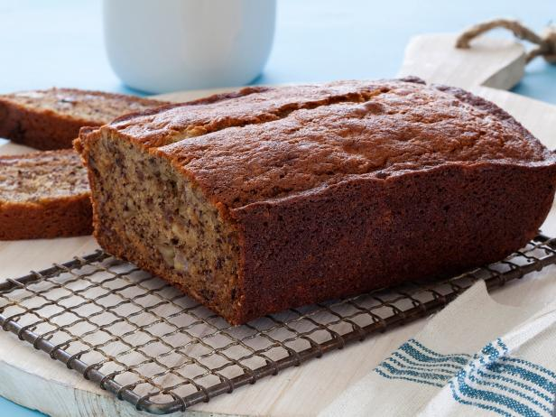

Banana Walnut Bread

Description
A banana bread recipe that is very forgiving and sure to satisfy
anyone. A great way to use ripened bananas!
Ingredients
- 3 ripened bananas; Peeled and mashed
- 1 1/4 cups unbleached all-purpose flour
- 1 teaspoon baking soda
- 1/2 teaspoon fine salt
- 2 large eggs
- 1/2 teaspoon vanilla extract
- 1/2 cup unsalted butter at room temperature; reserve some extra for preparing the pan
- 3/4 - 1 cup sugar adjusted to taste
- 1/2 cup toasted walnut pieces
Steps
- Sift flour, baking soda, and salt into a medium bowl. Add walnut pieces.
- Pre-heat oven to 350 degrees F.
- Grease the pan you will be using with either butter or the oil of your choice.
- Mix butter and sugar together with mashed bananas.
- Whisk eggs and vanilla together and then incorporate into banan mixture.
- Using a rubber spatula, mix in banana and egg mixture into dry ingredients until no dry flour remains.
- Transfer to the greased pan and set into the pre-heated oven.
- Bake for about 55 minutes or until a toothpick inserted into the center is clean when removed.
- Let cool in pan for 5 minutes before removing and cooling on rack.